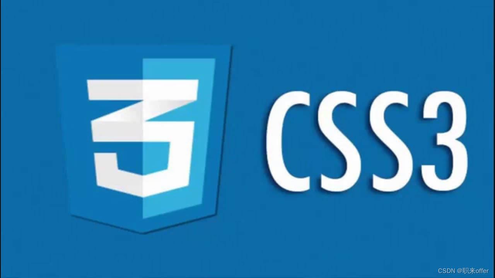

什么是CSS？
CSS是网页的"化妆品"，它负责让HTML内容变得漂亮和吸引人。
简单理解
把网页想象成一个人：
- HTML = 人的骨架和器官（结构）
- CSS = 人的衣服和妆容（外观）
- JavaScript = 人的行为和动作（交互）
CSS能做什么？
好消息！
CSS学习起来很有趣！你可以立即看到自己的设计成果，就像在给网页"化妆"一样。
CSS如何工作
CSS通过"选择器"找到HTML元素，然后给它们添加样式。
1
浏览器读取HTML
浏览器先读取HTML文档，了解网页的结构
三种使用CSS的方式
<!-- 1. 内联样式 -->
<p style="color: red; font-size: 20px;">这是红色文字</p>
<!-- 2. 内部样式表 -->
<style>
p {
color: blue;
font-size: 18px;
}
</style>
<!-- 3. 外部样式表 -->
<link rel="stylesheet" href="styles.css">
最佳实践
推荐使用外部样式表，因为：
- 代码更整洁
- 易于维护
- 可以在多个页面重复使用
- 浏览器可以缓存CSS文件，加载更快
CSS基础语法
CSS规则由选择器和声明块组成。
完整示例
/* 选择所有 <p> 标签 */
p {
color: blue; /* 文字颜色 */
font-size: 16px; /* 字体大小 */
margin: 10px; /* 外边距 */
}
效果展示：
这是一个蓝色的段落文字，字体大小为16像素，有10像素的外边距。
CSS注释
注释用于解释代码，不会被浏览器执行。
/* 这是一个单行注释 */
/*
这是一个
多行注释
*/
p {
color: red; /* 把文字变成红色 */
}
重要提醒
CSS对大小写不敏感，但建议使用小写。每个声明要以分号(;)结束！
选择器详解
选择器告诉浏览器要对哪些HTML元素应用样式。
基本选择器
/* 1. 元素选择器 - 选择所有 <p> 标签 */
p {
color: blue;
}
/* 2. 类选择器 - 选择 class="intro" 的元素 */
.intro {
font-size: 18px;
}
/* 3. ID选择器 - 选择 id="header" 的元素 */
#header {
background: gray;
}
/* 4. 通用选择器 - 选择所有元素 */
* {
margin: 0;
padding: 0;
}
组合选择器
/* 选择所有 <div> 中的 <p> 标签 */
div p {
color: red;
}
/* 选择直接子元素 */
div > p {
font-weight: bold;
}
/* 选择相邻兄弟元素 */
h1 + p {
margin-top: 0;
}
/* 选择所有兄弟元素 */
h1 ~ p {
color: green;
}
属性选择器
/* 选择有title属性的元素 */
[title] {
border: 1px solid black;
}
/* 选择title="hello"的元素 */
[title="hello"] {
color: red;
}
/* 选择title包含"hello"的元素 */
[title*="hello"] {
background: yellow;
}
选择器优先级
当多个选择器作用于同一个元素时，优先级规则是：
- ID选择器 > 类选择器 > 元素选择器
- 内联样式 > 内部样式 > 外部样式
!important 最高优先级（慎用）
颜色表示法
CSS有多种方式表示颜色。
颜色表示方法
/* 1. 颜色名称 */
color: red;
color: blue;
color: lightgreen;
/* 2. 十六进制 */
color: #ff0000; /* 红色 */
color: #00ff00; /* 绿色 */
color: #0000ff; /* 蓝色 */
/* 3. RGB */
color: rgb(255, 0, 0); /* 红色 */
color: rgb(0, 255, 0); /* 绿色 */
color: rgb(0, 0, 255); /* 蓝色 */
/* 4. RGBA (带透明度) */
color: rgba(255, 0, 0, 0.5); /* 半透明红色 */
/* 5. HSL */
color: hsl(0, 100%, 50%); /* 红色 */
color: hsl(120, 100%, 50%); /* 绿色 */
推荐使用
对于初学者，建议使用：
- 十六进制 - 最常用，简洁明了
- RGBA - 需要透明度时使用
- 在线颜色选择器可以帮助你找到喜欢的颜色
背景样式
CSS可以设置元素的背景颜色、图片等。
背景属性
/* 背景颜色 */
background-color: #f0f0f0;
/* 背景图片 */
background-image: url('image.jpg');
/* 背景重复 */
background-repeat: no-repeat; /* 不重复 */
background-repeat: repeat-x; /* 水平重复 */
background-repeat: repeat-y; /* 垂直重复 */
/* 背景位置 */
background-position: center top;
background-position: 10px 20px;
/* 背景大小 */
background-size: cover; /* 覆盖整个元素 */
background-size: contain; /* 完整显示图片 */
background-size: 200px 100px; /* 指定大小 */
/* 简写属性 */
background: #f0f0f0 url('image.jpg') no-repeat center top;
渐变背景
/* 线性渐变 */
background: linear-gradient(to right, red, yellow);
/* 径向渐变 */
background: radial-gradient(circle, red, yellow, green);
/* 实际示例 */
background: linear-gradient(135deg, #667eea 0%, #764ba2 100%);
background: linear-gradient(45deg, #ff9a9e 0%, #fad0c4 100%);
文本属性
控制文字的外观和排版。
常用文本属性
/* 文字颜色 */
color: #333;
/* 文字对齐 */
text-align: left; /* 左对齐 */
text-align: center; /* 居中 */
text-align: right; /* 右对齐 */
text-align: justify; /* 两端对齐 */
/* 文字装饰 */
text-decoration: none; /* 无装饰 */
text-decoration: underline; /* 下划线 */
text-decoration: line-through; /* 删除线 */
/* 文字转换 */
text-transform: uppercase; /* 全部大写 */
text-transform: lowercase; /* 全部小写 */
text-transform: capitalize; /* 首字母大写 */
/* 行高 */
line-height: 1.5;
/* 文字阴影 */
text-shadow: 2px 2px 4px rgba(0,0,0,0.5);
左对齐文本
居中文本
右对齐文本
下划线文本
删除线文本
全部大写文本
带阴影的文本
字体控制
设置文字的字体、大小、粗细等。
字体属性
/* 字体族 */
font-family: Arial, sans-serif;
font-family: "Microsoft YaHei", sans-serif;
/* 字体大小 */
font-size: 16px;
font-size: 1.2em;
font-size: 120%;
/* 字体粗细 */
font-weight: normal; /* 正常 */
font-weight: bold; /* 粗体 */
font-weight: 300; /* 数字值 */
/* 字体样式 */
font-style: normal; /* 正常 */
font-style: italic; /* 斜体 */
/* 简写属性 */
font: italic bold 16px/1.5 Arial, sans-serif;
Arial 字体
Times New Roman 字体
正常粗细
粗体文字
斜体文字
字体栈
使用字体栈确保兼容性：
font-family: "Preferred Font", "Fallback Font", generic-family;
浏览器会按顺序尝试使用字体，如果前一个不可用，就使用下一个。
盒模型
每个HTML元素都是一个矩形盒子，由内容、内边距、边框和外边距组成。
外边距 (margin) | 边框 (border) | 内边距 (padding) | 内容 (content)
盒模型属性
/* 外边距 - 盒子与其他元素的距离 */
margin: 10px; /* 上下左右 */
margin: 10px 20px; /* 上下 | 左右 */
margin: 10px 20px 30px 40px; /* 上 | 右 | 下 | 左 */
/* 内边距 - 内容与边框的距离 */
padding: 10px;
padding: 10px 20px;
padding: 10px 20px 30px 40px;
/* 边框 */
border: 1px solid #000; /* 宽度 | 样式 | 颜色 */
border-width: 2px;
border-style: solid; /* 实线 */
border-style: dashed; /* 虚线 */
border-style: dotted; /* 点线 */
border-color: red;
/* 宽度和高度 */
width: 200px;
height: 100px;
盒模型计算
元素的总宽度 = width + padding + border + margin
使用 box-sizing: border-box; 可以让宽度包含padding和border。
显示属性
控制元素如何显示在页面上。
主要显示类型
/* 块级元素 - 独占一行 */
display: block;
/* 行内元素 - 与其他元素在同一行 */
display: inline;
/* 行内块元素 - 在同一行，但可以设置宽高 */
display: inline-block;
/* 隐藏元素 */
display: none;
/* Flex布局 */
display: flex;
/* Grid布局 */
display: grid;
显示类型示例：
块级元素 - 独占一行
行内元素1
行内元素2
行内块元素
定位
控制元素在页面上的位置。
定位类型
/* 静态定位 - 默认值 */
position: static;
/* 相对定位 - 相对于原位置移动 */
position: relative;
top: 10px;
left: 20px;
/* 绝对定位 - 相对于最近的定位祖先元素 */
position: absolute;
top: 0;
right: 0;
/* 固定定位 - 相对于浏览器窗口 */
position: fixed;
bottom: 0;
left: 0;
/* 粘性定位 - 在滚动时固定 */
position: sticky;
top: 0;
Flexbox布局
Flexbox让创建灵活的布局变得非常简单。
Flexbox是什么？
Flexbox就像一个有弹性的容器，里面的项目可以自动调整大小和位置来适应空间。
Flex容器属性
.container {
display: flex;
flex-direction: row; /* 主轴方向 */
justify-content: center; /* 主轴对齐 */
align-items: center; /* 交叉轴对齐 */
flex-wrap: wrap; /* 是否换行 */
}
Flex项目属性
.item {
flex: 1; /* 伸缩比例 */
order: 2; /* 排列顺序 */
align-self: center; /* 单独对齐 */
}
Flexbox示例：
这些项目会自动调整大小来填满容器！
动手练习
让我们创建一个简单的卡片组件，练习学到的CSS知识。
1
创建HTML结构
<div class="card">
<img src="https://via.placeholder.com/300x200" alt="示例图片">
<div class="card-content">
<h3>卡片标题</h3>
<p>这是一个漂亮的卡片组件，使用了我们学到的CSS知识。</p>
<button>了解更多</button>
</div>
</div>
2
添加CSS样式
.card {
width: 300px;
background: white;
border-radius: 10px;
box-shadow: 0 4px 8px rgba(0,0,0,0.1);
overflow: hidden;
margin: 20px;
}
.card img {
width: 100%;
height: 200px;
object-fit: cover;
}
.card-content {
padding: 20px;
}
.card h3 {
color: #333;
margin-bottom: 10px;
}
.card p {
color: #666;
line-height: 1.5;
margin-bottom: 15px;
}
.card button {
background: #12c2e9;
color: white;
border: none;
padding: 10px 20px;
border-radius: 5px;
cursor: pointer;
}
.card button:hover {
background: #0fa8c7;
}
3
查看效果

卡片标题
这是一个漂亮的卡片组件，使用了我们学到的CSS知识。
恭喜！你创建了一个漂亮的卡片组件！
太棒了！
你已经掌握了CSS的基础知识！继续练习，尝试创建更多有趣的组件和布局。
记住：CSS最重要的是实践，多写代码，多看效果，你的技能会快速提升！